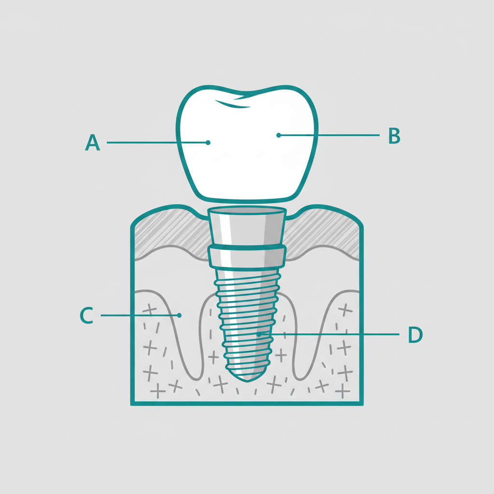
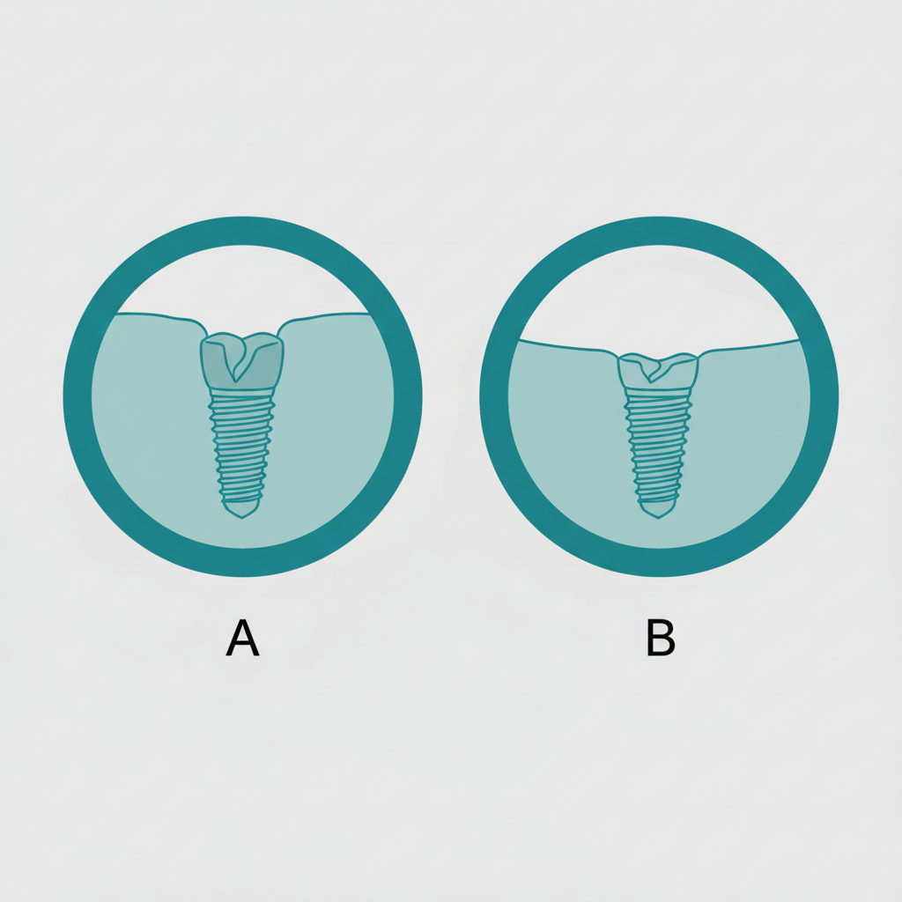
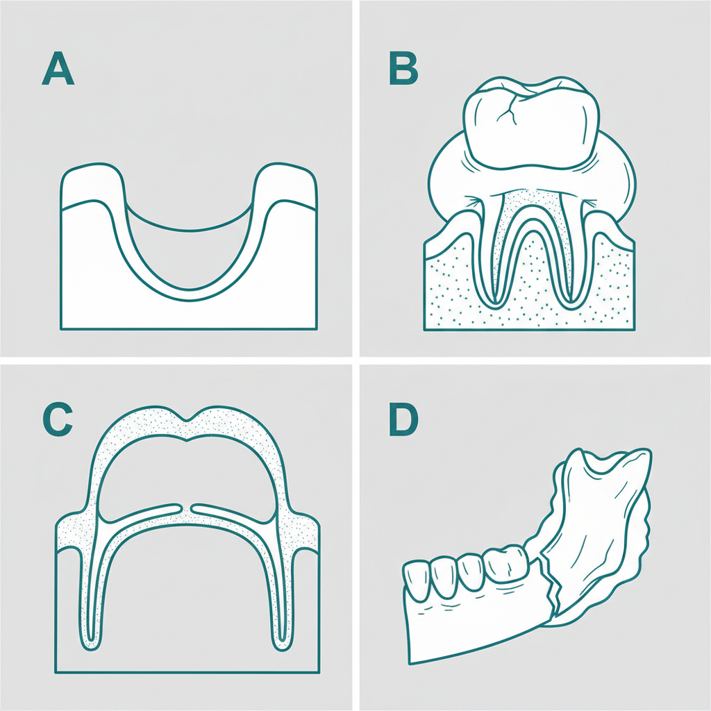
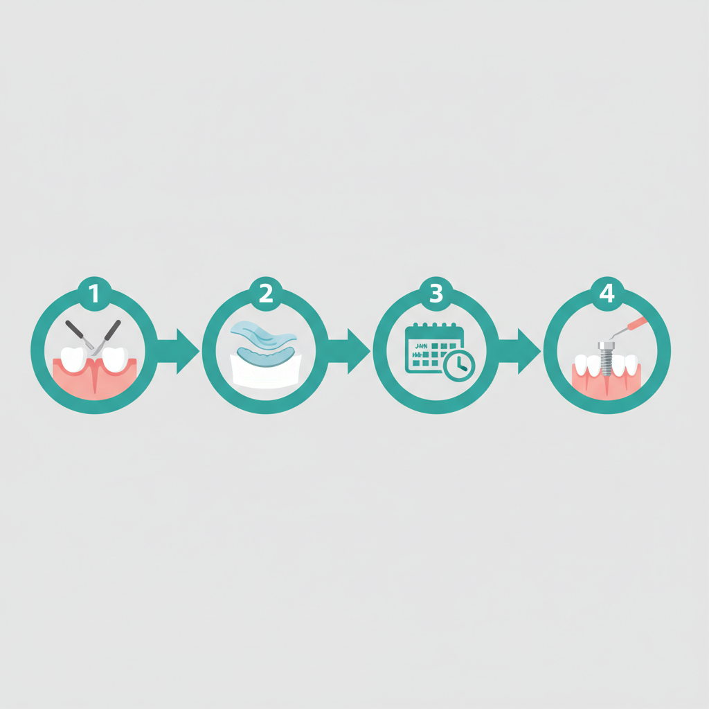
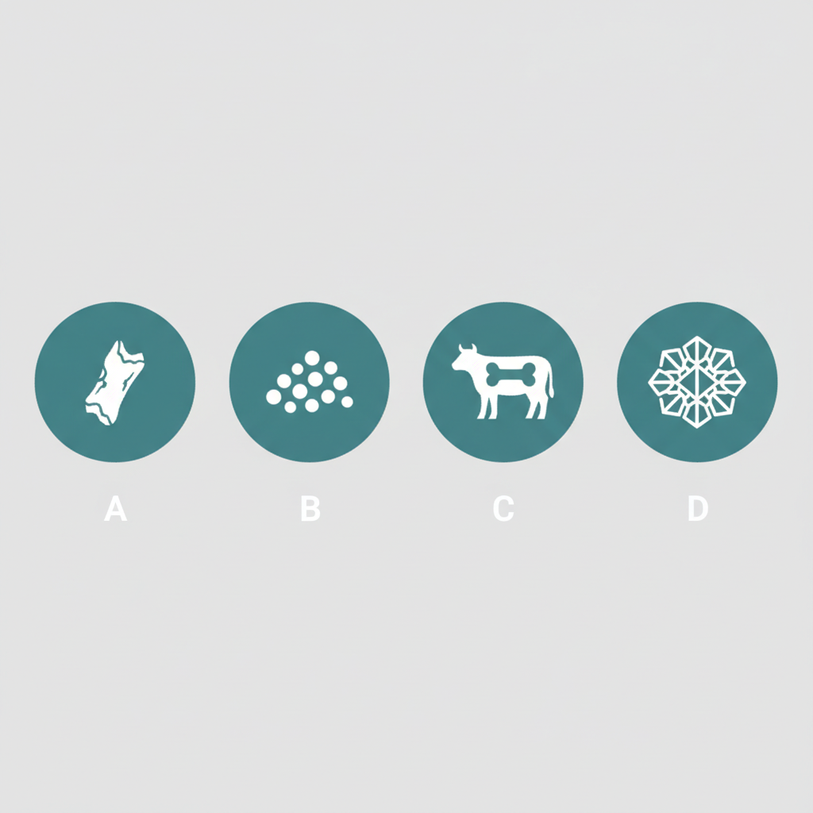
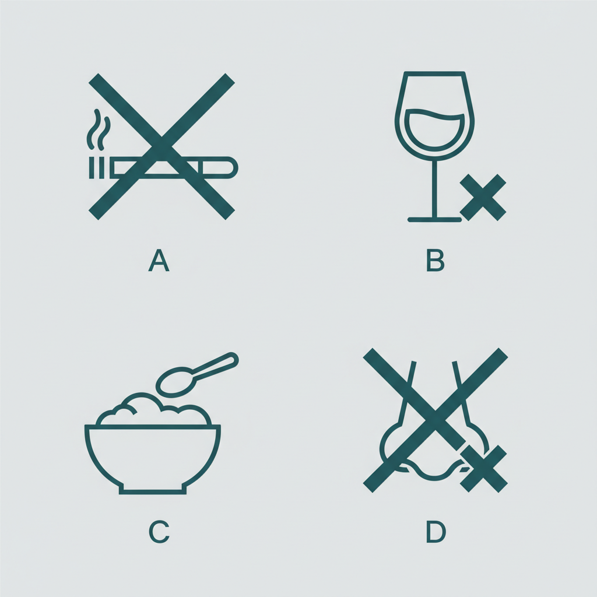
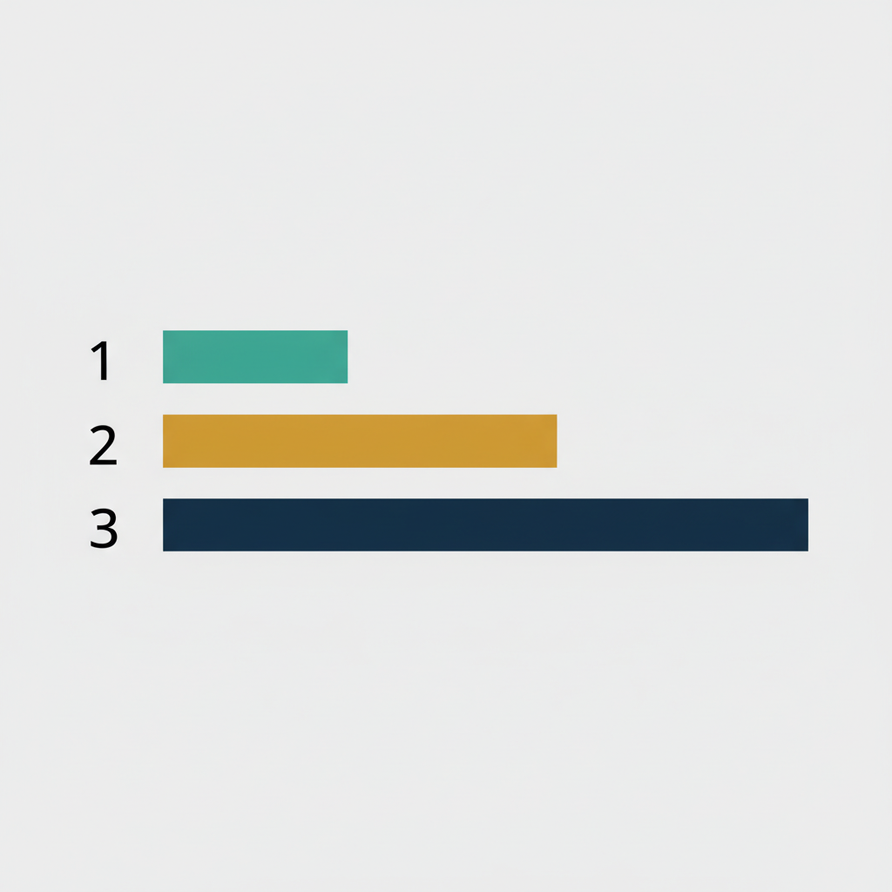
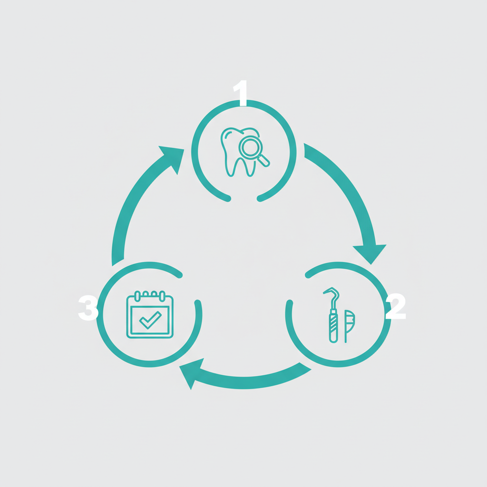

필요한 경우부터 과정, 재료 비교, 회복 관리까지 총정리
임플란트 상담을 받으러 갔는데 "뼈이식이 필요합니다"라는 말을 듣는 순간, 머릿속이 복잡해집니다. 임플란트만 해도 큰마음을 먹고 병원에 갔는데, 뼈까지 이식해야 한다니. 비용은 얼마나 더 드는 건지, 수술이 더 힘들어지는 건 아닌지, 치료 기간은 얼마나 길어지는 건지. 한 번도 겪어보지 않은 일이기에 걱정이 꼬리를 물 수밖에 없습니다.
실제로 임플란트 뼈이식은 임플란트 시술의 약 30~50%에서 동반되는, 생각보다 흔한 과정입니다. 치과에서 뼈이식이 필요하다는 진단을 받았다면, 그것은 더 안전하고 오래가는 임플란트를 위한 기초 공사라고 이해하시면 됩니다.
막연한 불안은 정보의 부재에서 비롯됩니다. 뼈이식이 정확히 무엇인지, 왜 필요한지, 어떤 과정으로 진행되는지를 알고 나면 불필요한 걱정은 상당 부분 줄어듭니다. 이 글에서는 뼈이식의 기초 원리부터 재료 비교, 회복 기간, 관리 방법, 그리고 자주 묻는 질문까지 순서대로 정리했습니다.

임플란트 뼈이식이란, 잇몸뼈(치조골)가 부족한 부위에 뼈 이식재를 채워 넣어 임플란트를 안정적으로 심을 수 있는 기반을 만드는 시술입니다. 의학 용어로는 골이식술(bone graft) 또는 골유도재생술(GBR, Guided Bone Regeneration)이라고 합니다.
임플란트는 잇몸뼈 속에 티타늄 소재의 나사(픽스처)를 심고, 그 위에 인공 치아(크라운)를 올리는 구조입니다. 이 나사가 뼈 속에 단단히 고정되어야 씹는 힘을 견딜 수 있습니다. 만약 뼈가 부족한 상태에서 무리하게 심으면, 나사가 흔들리거나 잇몸 밖으로 노출될 수 있고, 장기적으로 임플란트가 탈락하는 원인이 됩니다.
비유하자면, 임플란트는 땅에 기둥을 박는 것과 같습니다. 땅이 단단하고 깊어야 기둥이 잘 서는 것처럼, 잇몸뼈가 충분해야 임플란트가 오래 유지됩니다. 뼈이식은 약한 지반을 보강하는 공사입니다.
뼈이식 과정은 이식재를 뼈가 부족한 부위에 채워 넣고, 그 위를 차폐막이라는 특수 막으로 덮어주는 것이 기본입니다. 차폐막은 이식재가 안정적으로 자리잡는 동안 잇몸 연조직이 뼈 공간으로 침범하는 것을 막아줍니다. 시간이 지나면 이식재 주변으로 새로운 뼈가 형성되고, 충분한 양의 뼈가 만들어지면 그 위에 임플란트를 식립합니다.
뼈이식의 양과 범위에 따라 시술 시간과 난이도가 달라집니다. 소량의 뼈이식은 임플란트 식립과 동시에 진행할 수 있어 별도의 수술이 필요하지 않는 경우도 많습니다. 반면 뼈 부족이 심한 경우에는 뼈이식만 먼저 진행하고, 3~6개월 후 뼈가 충분히 형성된 것을 확인한 뒤에 임플란트를 심습니다.

뼈이식 필요한 경우는 CT 촬영을 통해 잇몸뼈의 높이, 폭, 밀도를 정밀하게 측정한 뒤 판단합니다. 단순히 눈으로 보거나 일반 엑스레이만으로는 정확한 판단이 어렵기 때문에, 3D CT 촬영이 필수적입니다. 일반적으로 다음 네 가지 상황에서 뼈이식이 필요합니다.
1. 발치 후 오랜 시간이 지난 경우
치아를 뽑고 나면 그 자리의 잇몸뼈는 자연적으로 흡수되기 시작합니다. 발치 후 3개월부터 본격적인 골흡수가 진행되며, 6개월이 지나면 뼈의 높이와 폭이 눈에 띄게 줄어듭니다. 1년 이상 방치한 경우에는 잇몸뼈가 원래의 40~60%까지 줄어들 수 있습니다. 특히 앞니 부위는 잇몸뼈가 얇아서 흡수 속도가 더 빠른 경향이 있습니다.
2. 치주질환(잇몸병)을 오래 앓은 경우
치주질환은 잇몸과 잇몸뼈에 염증을 일으키는 질환입니다. 초기 치은염 단계에서는 잇몸만 붓지만, 치주염으로 진행되면 잇몸뼈까지 녹아내리기 시작합니다. 심한 풍치로 치아가 흔들리다가 빠지는 경우, 치아 주변의 잇몸뼈가 이미 상당히 소실된 상태인 경우가 많습니다. 이런 상황에서는 뼈이식 없이 임플란트를 심기 어렵습니다.
3. 위턱 어금니 부위 (상악동 거상술이 필요한 경우)
위턱 어금니 바로 위에는 상악동(부비강)이라는 빈 공간이 있습니다. 이 공간은 사람마다 크기가 다르며, 상악동이 큰 경우에는 위턱의 잇몸뼈 높이가 부족해집니다. 일반적으로 임플란트 픽스처의 길이가 8~13mm인데, 상악동까지의 뼈 높이가 이보다 짧으면 상악동 거상술(사이너스 리프트)을 통해 뼈를 보충합니다. 상악동의 바닥 점막을 위로 올리고 그 아래 공간에 이식재를 채워 넣는 방식입니다.
4. 외상이나 사고로 뼈가 손상된 경우
교통사고나 스포츠 부상 등으로 치아와 함께 잇몸뼈가 깨지거나 소실된 경우에도 뼈이식이 필요합니다. 외상으로 인한 골 손실은 범위가 넓고 불규칙한 경우가 많아, 뼈이식의 양이 다른 경우보다 많을 수 있습니다. 외상 후에는 가능한 빨리 치과에 내원하여 뼈 상태를 확인하는 것이 중요합니다.

뼈이식 임플란트의 전체 과정은 크게 5단계로 진행됩니다. 뼈 부족 정도에 따라 동시 식립이 가능한 경우와 단계별로 나누어 진행하는 경우가 나뉩니다. 아래는 가장 일반적인 단계별 과정입니다.
정밀 검사 및 치료 계획 수립
3D CT 촬영으로 잇몸뼈의 높이, 폭, 밀도를 정밀하게 측정합니다. 뼈 부족의 정도와 위치, 주변 신경과 혈관의 위치를 파악하여 이식 범위와 재료를 결정합니다. 환자의 전신 건강 상태(당뇨, 골다공증, 복용 약물 등)도 함께 확인합니다.
잇몸 절개 및 이식재 삽입
국소마취 후 잇몸을 절개하여 뼈가 부족한 부위를 노출시킵니다. 이식재를 적절한 양만큼 채워 넣습니다. 소량 이식의 경우 시술 시간은 30~40분 정도이며, 광범위 이식의 경우 60~90분이 소요될 수 있습니다.
차폐막 덮기 및 봉합
이식재 위에 차폐막(멤브레인)을 덮어줍니다. 차폐막은 잇몸 연조직이 뼈가 형성될 공간으로 파고드는 것을 방지하여 이식재가 안정적으로 뼈로 전환되도록 돕습니다. 차폐막을 덮은 뒤 잇몸을 봉합합니다. 흡수성 차폐막은 별도 제거 없이 자연 분해되며, 비흡수성 차폐막은 추후 제거가 필요합니다.
뼈 형성 대기 기간 (3~6개월)
이식재 주변으로 새로운 뼈가 형성되는 기간입니다. 이 기간 동안 정기적으로 치과에 내원하여 뼈 형성 상태를 확인합니다. 이 시기에 흡연이나 과도한 자극은 뼈 형성을 방해할 수 있으므로 각별한 주의가 필요합니다.
임플란트 식립
CT 촬영으로 충분한 뼈가 형성된 것을 확인한 후, 해당 부위에 임플란트 픽스처를 심습니다. 이후 픽스처가 뼈와 결합하는 골유착 기간(2~4개월)을 거쳐, 지대주와 최종 크라운을 연결하면 치료가 완료됩니다.
뼈 부족이 경미한 경우에는 뼈이식과 임플란트 식립을 동시에 진행할 수 있습니다. 이 경우 별도의 대기 기간 없이 전체 임플란트 뼈이식 기간을 크게 단축할 수 있다는 장점이 있습니다. 동시 식립이 가능한지 여부는 잔존 뼈의 양과 밀도에 따라 달라지며, 담당 의사가 CT 분석 결과를 바탕으로 판단합니다.

뼈이식에 사용되는 이식재는 크게 네 가지로 분류됩니다. 각각 원료, 생착률, 비용, 적합한 상황이 다르기 때문에 환자의 뼈 상태와 이식 범위에 맞춰 선택합니다.
| 재료 | 원료 | 장점 | 고려사항 |
|---|---|---|---|
| 자가골 | 본인의 턱뼈, 구강 내 뼈 |
생착률이 가장 높음, 거부반응 없음 |
채취 부위에 2차 수술 필요, 채취량에 한계 |
| 동종골 | 타인의 뼈를 멸균 가공 처리 |
자가골에 준하는 생체 적합성, 추가 수술 불필요 |
공급처 검증이 중요, 비용이 상대적으로 높음 |
| 이종골 | 소, 돼지 등 동물 뼈에서 유기물 제거 후 가공 |
공급이 안정적, 수십 년의 임상 데이터 축적 |
자가골 대비 생착 속도가 다소 느릴 수 있음 |
| 합성골 | HA, TCP 등 인공 합성 재료 |
감염 위험 최소, 균일한 품질 유지 |
골 형성 능력이 상대적으로 낮음 |
자가골은 본인의 뼈를 사용하기 때문에 거부반응이 없고 생착률이 가장 높습니다. 그러나 뼈를 채취하기 위한 2차 수술이 필요하고, 채취할 수 있는 양에 한계가 있습니다. 주로 턱뼈의 다른 부위(하악지, 이부)에서 채취하며, 대량이 필요한 경우 골반뼈에서 채취하기도 합니다.
동종골은 조직은행에서 엄격한 기준에 따라 가공된 타인의 뼈를 사용합니다. 멸균 및 동결건조 처리를 거치므로 안전성이 확보되어 있으며, 자가골과 유사한 생체 적합성을 보입니다. 별도의 채취 수술이 필요 없다는 장점이 있습니다.
이종골은 실제 치과 임상에서 가장 널리 사용되는 이식재입니다. 동물 뼈에서 유기물과 단백질을 완전히 제거하여 무기질 골격만 남긴 것으로, 수십 년간의 임상 데이터가 축적되어 있습니다. Bio-Oss(바이오오스) 등이 대표적인 제품입니다.
합성골은 인공적으로 제조한 이식재로, 하이드록시아파타이트(HA)나 삼인산칼슘(TCP) 등의 성분으로 이루어져 있습니다. 동물이나 타인의 조직을 사용하지 않으므로 심리적 거부감이 적고, 품질이 균일하다는 장점이 있습니다.
어떤 재료가 적합한지는 환자의 잇몸뼈 상태, 이식 범위, 전신 건강 상태, 그리고 시술 부위 등을 종합적으로 고려하여 판단합니다. 실제 임상에서는 두 가지 이상의 재료를 혼합하여 사용하는 경우도 있습니다.

뼈이식 시술 직후에는 약간의 붓기와 통증이 있을 수 있습니다. 보통 시술 후 2~3일째가 붓기의 정점이며, 일주일 정도면 대부분 가라앉습니다. 처방받은 항생제는 반드시 끝까지 복용하고, 진통제는 통증이 시작되기 전에 미리 복용하는 것이 효과적입니다.
시술 후 48시간까지는 냉찜질이 붓기 완화에 도움됩니다. 얼음주머니를 수건으로 감싸서 시술 부위 볼 바깥쪽에 20분 대고, 20분 떼는 방식으로 반복합니다. 3일째부터는 온찜질로 전환하면 혈액 순환을 촉진하여 회복이 빨라집니다.
회복 기간 동안 지켜야 할 주의사항을 구체적으로 정리하면 다음과 같습니다.
금연 (시술 전 2주 ~ 시술 후 8주)
니코틴은 혈관을 수축시켜 이식 부위로의 혈류를 줄입니다. 산소와 영양분 공급이 부족해지면 이식재와 뼈의 결합이 지연되거나 실패할 수 있습니다. 흡연자의 뼈이식 실패율은 비흡연자 대비 2배 이상 높다는 연구 결과가 있습니다. 최소 시술 후 8주간은 반드시 금연해야 합니다.
금주 (시술 후 최소 2주)
알코올은 혈관을 확장시켜 시술 부위의 출혈 위험을 높입니다. 또한 항생제와 진통제의 효과를 떨어뜨리며, 면역 기능을 약화시켜 감염 위험을 증가시킵니다. 시술 후 최소 2주, 가능하면 4주까지 금주하는 것이 안전합니다.
음식 (부드러운 음식 1~2주)
시술 후 1~2주간은 죽, 스프, 두부, 계란찜 등 부드러운 음식 위주로 드십시오. 딱딱하거나 질긴 음식은 이식 부위에 물리적 충격을 줄 수 있습니다. 뜨거운 음식이나 매운 음식도 자극이 되므로 피하시고, 가급적 미지근한 온도의 음식을 권장합니다.
양치질 (시술 부위 주의)
시술 부위 이외의 치아는 평소대로 양치해도 됩니다. 다만 시술 부위는 칫솔이 직접 닿지 않도록 주의하고, 처방받은 가글액(클로르헥시딘 등)으로 소독하는 것이 좋습니다. 봉합 실이 풀리지 않도록 물로 세게 헹구는 것도 피해야 합니다.
상악동 거상술을 받은 경우에는 추가 주의사항이 있습니다. 코를 세게 풀거나, 빨대를 사용하거나, 풍선을 불거나, 재채기를 참으려고 코를 막는 행동은 상악동 내부에 압력 변화를 일으켜 이식 부위에 영향을 줄 수 있습니다. 비행기 탑승도 시술 후 2주간은 가급적 피하는 것이 좋습니다.
시술 후 1주, 2주, 1개월, 3개월, 6개월 시점에 정기 내원하여 회복 상태를 확인하는 것이 일반적입니다. 이상 증상(심한 통증, 고름, 이식재 유출 등)이 있으면 즉시 내원하셔야 합니다.

모든 임플란트에 뼈이식이 필요한 것은 아닙니다. 잇몸뼈가 충분한 경우에는 뼈이식 없이 바로 임플란트를 심을 수 있습니다. 뼈이식을 피할 수 있는 가장 확실한 방법은, 뼈가 줄어들기 전에 치료를 시작하는 것입니다.
치아를 발치한 후 1~3개월 이내에 임플란트 상담을 받으면, 뼈 흡수가 심하게 진행되기 전에 치료를 시작할 수 있습니다. 시기를 놓치면 뼈이식이라는 추가 과정이 생기고, 치료 기간과 비용이 모두 늘어납니다.
잇몸 건강을 꾸준히 관리하는 것도 뼈이식을 예방하는 근본적인 방법입니다. 치주질환이 초기 단계에서 치료되면 잇몸뼈 소실을 막을 수 있으며, 6개월에 한 번 정기검진과 스케일링을 받는 것이 가장 경제적인 예방법입니다.
이미 뼈가 어느 정도 줄어든 상태라 하더라도, 뼈이식 없이 임플란트를 진행할 수 있는 경우가 있습니다. 짧은 길이의 임플란트(숏 임플란트)를 사용하거나, 식립 각도를 기울여서 남아 있는 뼈를 최대한 활용하는 방법입니다. 또한 발치와 동시에 임플란트를 심는 즉시 식립(발치 즉시 임플란트)도 뼈 흡수가 진행되기 전에 치료하는 효과적인 방법입니다.
다만 이러한 대안적 방법이 모든 환자에게 적용 가능한 것은 아닙니다. 잔존 뼈의 양과 질, 임플란트를 심을 부위, 환자의 교합 상태 등을 종합적으로 고려해야 하며, 반드시 정밀 CT 검사 후에 판단해야 합니다.

Q.뼈이식을 하면 많이 아픈가요?
시술 중에는 국소마취를 하기 때문에 통증을 느끼지 않습니다. 시술 후에는 2~3일간 붓기와 뻐근한 통증이 있을 수 있으나, 처방 진통제로 충분히 관리 가능한 수준입니다. 개인차가 있지만, 일반적인 사랑니 발치와 비슷하거나 약간 더한 정도로 보시면 됩니다. 극심한 통증이 지속되는 경우는 드물며, 시술 후 3~5일이 지나면 일상생활에 큰 불편 없이 복귀하시는 분이 대부분입니다.
Q.임플란트 뼈이식 기간은 전체적으로 얼마나 걸리나요?
뼈이식 후 새 뼈가 충분히 형성되기까지 보통 3~6개월이 소요됩니다. 이후 임플란트 식립, 골유착(2~4개월), 보철물 제작 및 장착까지 포함하면 전체 치료 기간은 약 6~12개월 정도입니다. 뼈 부족이 경미하여 동시 식립이 가능한 경우에는 3~5개월 정도로 기간이 단축될 수 있습니다. 환자마다 뼈의 재생 속도가 다르므로, 정확한 기간은 경과 관찰을 통해 담당 의사가 판단합니다.
Q.뼈이식의 성공률은 어느 정도인가요?
현재 뼈이식 시술은 수십 년간의 임상 데이터가 축적되어 있으며, 일반적으로 높은 안정성을 보이는 시술입니다. 다만 흡연, 비조절 당뇨, 구강 위생 불량, 면역력 저하 등의 요인이 있으면 결과에 영향을 줄 수 있습니다. 시술 전후의 관리 수칙을 잘 지키는 것이 성공적인 결과를 위해 가장 중요합니다. 특히 금연은 성공률에 가장 큰 영향을 미치는 요소 중 하나입니다.
Q.뼈이식 재료는 어떻게 선택해야 하나요?
각 재료마다 고유한 장단점이 있으므로, 하나의 재료가 모든 상황에서 가장 좋다고 단정할 수는 없습니다. 자가골은 생착률이 높지만 추가 채취 수술이 필요하고, 이종골은 임상 실적이 풍부하며 별도 수술이 불필요합니다. 합성골은 감염 위험이 적고 품질이 균일합니다. 이식 부위의 크기, 잔존 뼈의 상태, 환자의 전신 건강, 예상 치료 기간 등을 종합적으로 고려하여 담당 의사와 상담 후 결정하시는 것이 바람직합니다.
Q.뼈이식 없이 임플란트를 하면 어떤 문제가 생기나요?
뼈가 부족한 상태에서 무리하게 임플란트를 심으면 여러 문제가 발생할 수 있습니다. 픽스처가 뼈에 단단히 고정되지 않아 초기 안정성이 떨어지고, 이는 골유착 실패로 이어질 수 있습니다. 장기적으로는 임플란트 주위에 만성 염증(임플란트 주위염)이 생기거나, 나사가 잇몸 밖으로 노출되거나, 임플란트가 흔들리다가 탈락하는 원인이 됩니다. 정확한 진단 없이 뼈이식을 생략하면 오히려 재시술로 인해 시간과 비용이 더 들 수 있으므로, 충분한 검사 후 판단하는 것이 중요합니다.

임플란트는 정확한 진단에서 시작됩니다.
CT 촬영 한 번이면 뼈이식이 필요한지, 어떤 방식이 본인에게 적합한지 상당 부분 파악할 수 있습니다.
뼈이식이 필요하다는 진단을 받으셨거나, 오래 전 발치 후 임플란트를 미루고 계셨다면 정밀 검사를 통해 현재 뼈 상태를 정확히 확인해 보시기 바랍니다.
궁금한 점이 있으시면 부담 없이 상담받아 보십시오.
상담 예약하기전화 상담도 가능합니다.
더 자세한 정보는 홈페이지에서 확인하실 수 있습니다.
https://claude-old.vercel.app